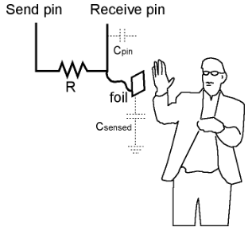
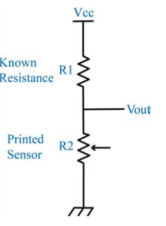
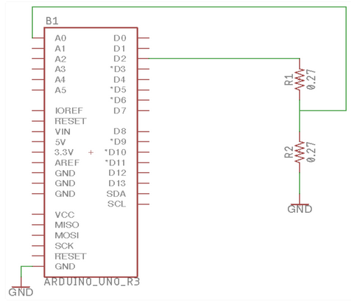
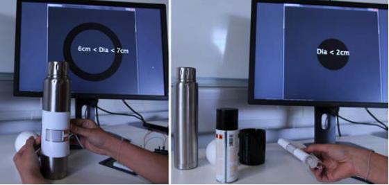
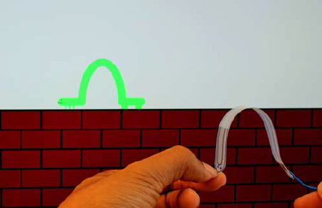
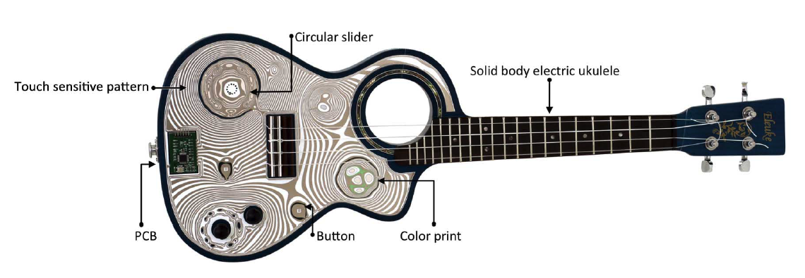
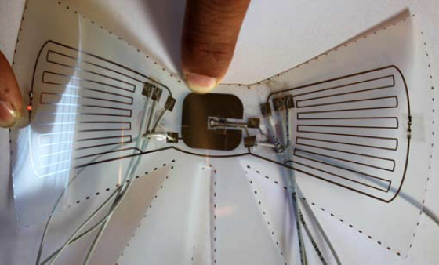

6.810 Engineering Interactive Technologies (fall 2020)
Conductive Inkjet Printing
In today's tutorial, you are going to use conductive inkjet printing to build a variety of different user input elements (buttons, sliders, dials, bend sensors).
The technique was initially introduced in a paper from Kawahara et al.
Sensor Types
- make a bend sensor
Steps You will do for each Sensor:
- make a sensor design in Adobe Illustrator
- print the sensor using conductive inkjet printing
- build the circuit
- connect the printed sensors to the measurement circuit using thin flat cables adhered to the design with copper tape
Touch Buttons
Basic Working Principle
We can sense a user's touch using a principle called capacitive touch sensing.
It requires only one electrode and is supported by the Arduino Toolkit.
Electronics
The circuit to implement touch sensing requires a resistor.
Low resistors (1kOhm - 100kOhm) are mostly used for sensing touch (see Figure below).
 
Code
The argument samples of the Arduino function
sensor.capacitiveSensor(samples);
defines its sensitivity.
For touch sensing a low sensitivity is common with samples between 1 and 20.
#include
double analog_touch;
int sender = 4;
int touch_pin_1 = 2;
int samples_touch = 10;
CapacitiveSensor sensor1 = CapacitiveSensor(sender, touch_pin_1);
void setup()
{
Serial.begin(9600);
}
void loop()
{
// Send value 1
// connect a 10-100 kOhm resistor here
Serial.print("Touch Sensor: ");
analog_touch = sensor1.capacitiveSensor(samples_touch);
Serial.println(analog_touch);
Serial.println();
delay(100);
}
Slider (aka multiple Touch-Buttons linearly arranged)
Discrete vs. Continous Sliders:
From the paper DuoSkin (ISWC 2016)

Continous Sliders (Different Aesthetic Design Options):
From the paper DuoSkin (ISWC 2016)


Dials (aka multiple Touch-Buttons circularly arranged)
Proximity Sensing
Basic Working Principle
Similar to touch sensing, proximity sensing uses capacitive sensing and uses the same Arduino Library and similar code.
This sensing method can detect hovering in up to 10 cm distance.
Electronics
The basic circuit is the same as for direct touch sensing.
However, to detect hovering, we need to increase the sensitivity of the sensing function to put the sensor's sensitivity to the limit.
We thus need to use a large resistor of 1-10 MOhm and set the sensing samples to a high value (>50).
Code
#include
double analog_touch;
int sender = 4;
int touch_pin_2 = 6;
int samples_proximity = 80;
CapacitiveSensor sensor1 = CapacitiveSensor(sender, touch_pin_2);
void setup()
{
Serial.begin(9600);
}
void loop()
{
// Send value 2
// connect a 1-10 MOhm resistor here
Serial.print("Proximity Sensor: ");
analog_proximity = sensor2.capacitiveSensor(samples_proximity);
Serial.println(analog_proximity);
Serial.println();
delay(100);
}
Bend Sensor
The images below show inkjet printed bend sensors in a variety of different shapes.
The bend sensor is based on the paper Flexy (ACM TEI 2017)

Basic Working Principle
The ink-jet printer prints tiny silver nano-particles on paper or foil.
Bending the paper in lets the tiny particles move closer to each other, bending the paper in the opposite direction lets the particles move apart from each other. One can measure this bending effect by monitoring resistance:
bending in: brings particles closer together and thus reduces resistance.
bending out: moves particles closer away from each other and thus increases resistance.
The higher the magnitude of flexing, the higher is the change in resistance.
This is the basic sensing principle behind resistive strain gauges.
Sensor Layout
Single Line: The most basic design of a flex sensor is a single line of conductor, whose resistance is measured from its two ends.
Two Parallel Lines: The line can also be laid out in a U shape, resulting in two parallel lines responding to flexing with a higher response than a single line.
Many Parallel Lines: Eventually, an even longer line can be laid out in a zig-zag pattern of parallel lines to maximize the sensing lines subjected to bending in the parallel direction.
The image below illustrates this standard design. The sensor design senses bending predominantly along the direction of the parallel sensor lines, referred as the longitudinal axis. We will demonstrate how to build upon this basic principle to realize customized sensor surfaces.

Electronics
The change in resistance can be measured either directly with a resistance meter or with a standard voltage divider curcuit.
It is important to chose a resistor that roughly matches the overall resistance of the bend sensor.
 
The known resistance value is generally chosen to be close to the flat state resistance of the printed design.
For instance, for a printed design with flat state resistance of 500Ω, a known resistance R1 of 470Ω was used.
Calculating the Resistance

R2: the resistance of the printed sensor (varies as you bend it, so we want to measure this!)
R1: the known resistance (470Ω in our example)
VCC: supply voltage (5V from the Arduino)
Vout: measured voltage output (measured from pin A0, see schematic)
Code
/*
ReadAnalogVoltage
Reads an analog input on pin 0, converts it to voltage, and prints the result to the serial monitor.
Graphical representation is available using serial plotter (Tools > Serial Plotter menu)
Attach the center pin of a potentiometer to pin A0, and the outside pins to +5V and ground.
*/
float R1 = 680; //known resistance
void setup() {
Serial.begin(9600);
}
void loop() {
int sensorValue = analogRead(A0);
// Convert the analog reading (which goes from 0 - 1023) to a voltage (0 - 5V):
float voltage = sensorValue * (5.0 / 1023.0);
Serial.println(voltage);
float R2 = (voltage / (5 - voltage)) * R1;
Serial.println(R2);
delay(1000);
}
Measuring Sensor Layouts
The design of a flex sensing geometry has the following primitives:
- number of sensing lines: With more sensing lines, the resistance change to flexing is higher as compared to fewer sensing lines. Our sensor designs typically have 10 to 30 sensing lines.
- line length: the line length of our sensors varies between 2cm and 5cm.
- line width: customize depending on the sensing material; more conductive materials such as silver nanoparticle ink, wider sensing lines result in a lower sensor response and are generally not preferred as more material is consumed with no advantage in sensing response. Instead, for applications that require less response range, fewer thin sensor lines can be drawn instead of a larger number of wide lines.
- line spacing: linear and angular spacing between the sensor lines. Each of the sensor lines need not be parallel to each other and can be placed at different angular orientations. This enables sensing multi-axial deformations. In addition, the linear spacing between the sensor lines is kept much smaller than the sensor length. If the spacing is larger, then the change in resistance to flexing across sensor length is attenuated within the material laid out in perpendicular direction.
- composition: how multiple sensing units within a geometry are laid spatially, e.g. two sensing units in a bird shape design are slightly curved to fit the wing shape better
- connecting traces: traces connect the sensor design to the area on the substrate where contacts are tethered to a microcontroller; generally quite wide to have less resistance, and typically curved to avoid resistance change due to any uni-axial flexion.
The resistance of the pattern depends on the sensor dimensions by

L: sensor length
A: cross-sectional area (number of lines * (line width * line thickness))
𝜌𝜌: resistivity of the sensing material
We present spatial arrangements of the sensor design in 1D & 2D for sensing surface deformations, in varied sensor geometries. For sensing more complex deformations of a 1D surface, a linear array of sensing units is presented. A radial array enables sensing of 2D deformations on a surface.
(left) An omni-directional flex sensor design (right) with intermediate tapping.

Example Bend Sensor Designs
Bird wing: This design illustrates a composition of multiple sensing units. A flex sensor spanning each of the wings can capture flexion during wing flapping. Sensing lines in each unit span the wings partly and are slightly curved to better fit to the wing shape. (design dimensions: length = 45mm, width = 0.35mm, curved at 8°).
Fish design: This design illustrates how a sensor can mimic the visual appearance of the interactive object. We illustrate a sensor placed around the caudal fin (tail) of the fish. The sensor can sense the back and forth wavy movement of the tail. It has fewer sensing lines with varying spacing between them. (design dimensions: length of fin =30mm, width of fin = 44mm, line width = 0.5mm).
Flower: This design illustrates a circular arrangement of individual sensing units. The example design consists of five petals connected through a central unit. Each of the sensing units consists of varying line lengths to conform to the petal shape and is connected to the central connector. (design dimensions: length1 = 29.78mm, length2 = 35.36mm, length3 = 36.46mm, width =0.33mm).
Crescent design: This design illustrates embedding a flex sensing within an extremely curved surface. Length of the sensing lines is continuously varied to adapt to the crescent shape. (design dimensions: length of crescent: 77 mm, width of crescent: 22mm, line width: 0.35mm).
Leaf design: This design illustrates alignment of the sensing lines at an angle to better fit the target shape. A single sensor runs through the entire leaf shape. Intermediate tapping points can be added for granular sensing response. (design dimensions: leaf length: 80mm, width: 35mm, sensing lines aligned at 45°).
double analog_touch;
int sender = 4;
int touch_pin_1 = 2;
int samples_touch = 10;
CapacitiveSensor sensor1 = CapacitiveSensor(sender, touch_pin_1);
void setup()
{
Serial.begin(9600);
}
void loop()
{
// Send value 1
// connect a 10-100 kOhm resistor here
Serial.print("Touch Sensor: ");
analog_touch = sensor1.capacitiveSensor(samples_touch);
Serial.println(analog_touch);
Serial.println();
delay(100);
}
double analog_touch;
int sender = 4;
int touch_pin_2 = 6;
int samples_proximity = 80;
CapacitiveSensor sensor1 = CapacitiveSensor(sender, touch_pin_2);
void setup()
{
Serial.begin(9600);
}
void loop()
{
// Send value 2
// connect a 1-10 MOhm resistor here
Serial.print("Proximity Sensor: ");
analog_proximity = sensor2.capacitiveSensor(samples_proximity);
Serial.println(analog_proximity);
Serial.println();
delay(100);
}
ReadAnalogVoltage
Reads an analog input on pin 0, converts it to voltage, and prints the result to the serial monitor.
Graphical representation is available using serial plotter (Tools > Serial Plotter menu)
Attach the center pin of a potentiometer to pin A0, and the outside pins to +5V and ground.
*/
float R1 = 680; //known resistance
void setup() {
Serial.begin(9600);
}
void loop() {
int sensorValue = analogRead(A0);
// Convert the analog reading (which goes from 0 - 1023) to a voltage (0 - 5V):
float voltage = sensorValue * (5.0 / 1023.0);
Serial.println(voltage);
float R2 = (voltage / (5 - voltage)) * R1;
Serial.println(R2);
delay(1000);
}
|
 Measuring the Curvature of objects with a single flex sensor. |
 A virtual inchworm animated with a single flex sensor. |
 Origami-Folding Tool that measures if you fold correctly. |
Your Task
Download an Example Design here (provided by Stefanie and Michael).Open it in Illustrator to make sure everything looks good.
Connect your laptop to one of the Inkjet Printer Stations and print out the design.
Wire Up the Circuit. Does it work?
Demo your Setup to an Instructor when done.
Printer, Inks, and Substrates
Printer: We used a Canon iP100 photo inkjet printer and an Epson L220 inkjet printer for printing the designs.
Ink: We used Mitsubishi NBSIJ–MU01 silver nanoparticle ink.
Substrate: White and transparent PET films. resin coated paper and glossy photo paper can also be used
Insulator: To increase robustness of the printed sensor, laminate of clear tape can be applied. This avoids moisture contact and silver being rubbed off.
Homework
Printing and patterning approaches offer a lot of freedom in how conductive traces can be laid out. This enables an unprecedented geometric variety of sensor layouts, including highly varied sizes, arrangements, and shapes of sensors. Your task is to create your own user interface with...
Interactive Guitar.
Paper Inkjet-printed conductive patterns for physical manipulation of audio signals

Printed IO Sheet with touch, flex inputs and LEDs.
Paper Flexy (ACM TEI 2017)